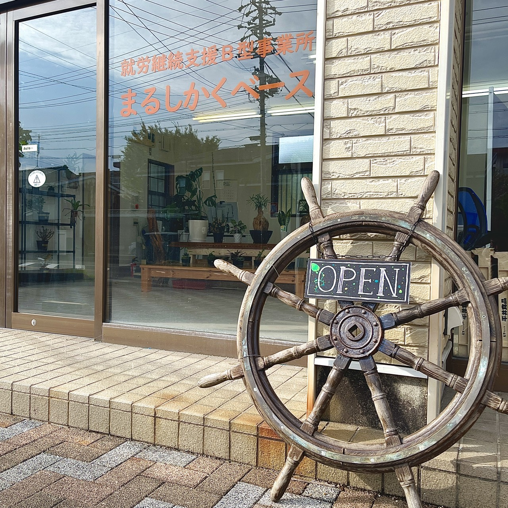
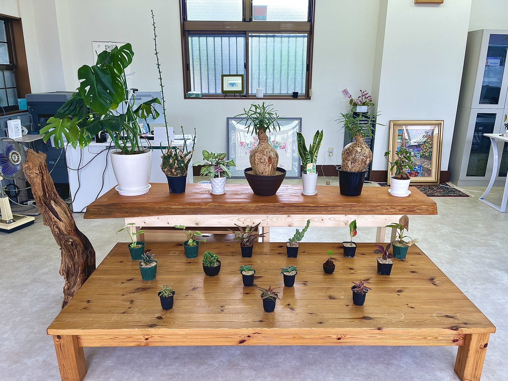
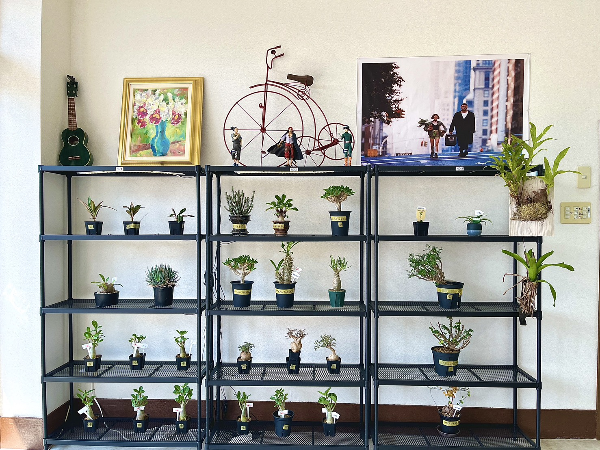
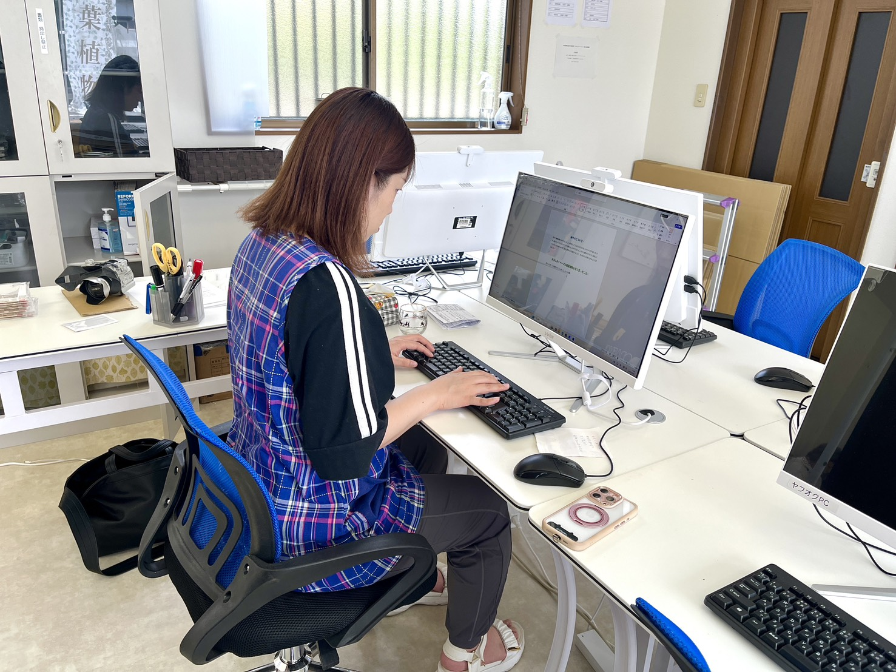
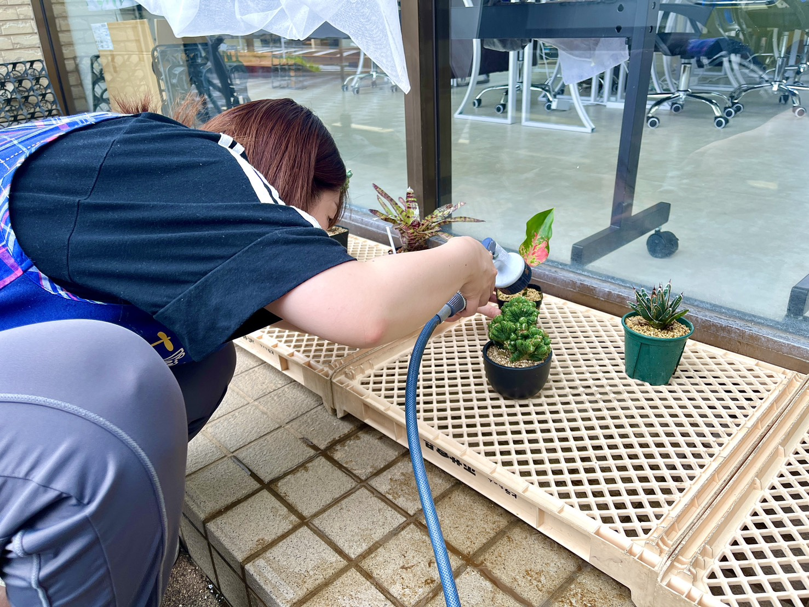
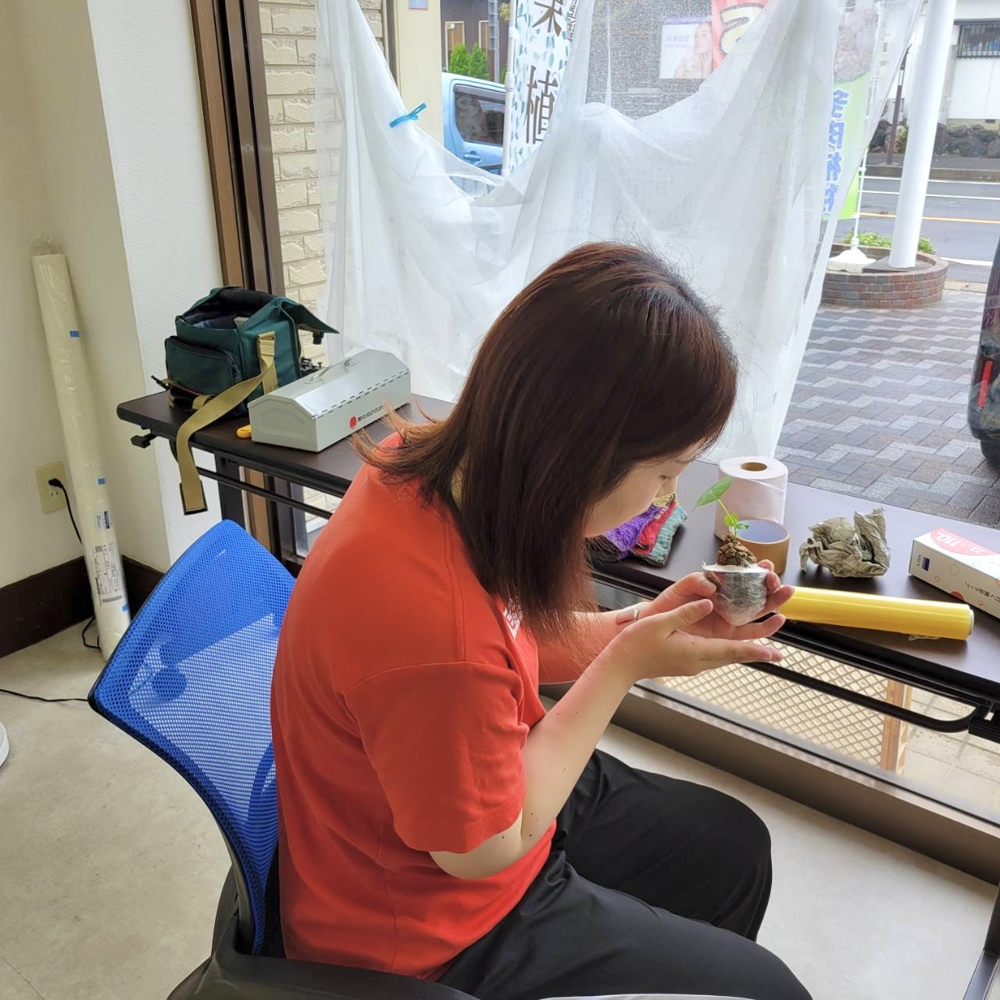

まるしかくベースについて
まるしかくベースは、三重県鈴鹿市にある就労継続支援B型事業所です。
主な活動は、観葉植物の育成・撮影・梱包・販売、簡単なパソコン作業など。
「植物が好き」「コツコツ作業するのが好き」「パソコンを使った仕事をしてみたい」など、 一人ひとりの興味や得意なことを活かしながら、自分のペースで取り組めます。
初めての方にもスタッフがサポートしますので、まずはお気軽に見学・ご相談ください。
活動の様子
観葉植物の手入れから梱包・出荷まで、事業所での作業風景をご紹介します。

事業所の外観

店内の植物ディスプレイ

植物棚

PC・事務作業

植物のお手入れ

梱包・出荷作業
まるしかくベースでできること
観葉植物を育てて販売するまでの一連の作業を、利用者さんとスタッフで分担しながら進めています。 得意なことや興味のあることから、少しずつ取り組んでいただけます。
利用しやすい環境
植物の育成
水やり、植え替え、植物のお手入れなど、観葉植物の育成に関する作業です。
商品撮影
販売する植物の写真撮影や、商品ページに掲載する写真の準備を行います。
梱包・発送
商品の梱包や発送準備など、販売に必要な作業を行います。
パソコン作業
商品情報の入力や、ネットショップに関する作業などに取り組めます。
個別サポート
一人ひとりの体調や得意・不得意に合わせて、無理なく取り組めるようスタッフがサポートします。
1日の流れ
作業と休憩を組み合わせた1日の基本的なスケジュールです。こまめに休憩を挟みながら、無理のないペースで取り組めます。
- 10:00〜10:30来所・体調チェック・準備
- 10:30〜11:20作業
- 11:20〜11:40休憩
- 11:40〜12:30作業
- 12:30〜14:00昼休み
- 14:00〜14:50作業
- 14:50〜15:10休憩
- 15:10〜15:40作業
- 15:40〜16:00休憩
こんな方におすすめです
植物が好き
コツコツ作業するのが好き
パソコンを使った仕事をしてみたい
商品の梱包や販売に興味がある
人との関わりに不安があり、少しずつ慣れていきたい
自分のペースで仕事をしたい
少しずつできることを増やしたい
将来的に一般就労を目指したい
就労継続支援B型とは？
就労継続支援B型は、一般企業などで働くことに不安がある方などが、 サポートを受けながら働く経験を積むことができる福祉サービスです。
体調や生活リズムに合わせて、自分のペースで作業に取り組むことができます。
「いきなり一般就労は難しいけど、働いてみたい」
「まずは外に出ることから始めたい」
「自分にできる仕事を見つけたい」
そんな方もお気軽にご相談ください。
ご利用までの流れ
-
1
お問い合わせ
電話やお問い合わせフォームなどからお気軽にご連絡ください。
-
2
見学
実際の事業所の雰囲気や作業内容をご覧いただけます。
-
3
体験
実際の作業を体験していただきます。
-
4
利用相談・手続き
利用について一緒に確認しながら進めていきます。
-
5
利用開始
一人ひとりのペースに合わせてスタートします。
よくある質問
植物の知識がなくても大丈夫ですか？
はい、大丈夫です。スタッフがサポートしますので、植物に詳しくない方も安心して取り組んでいただけます。
パソコンが苦手でも大丈夫ですか？
はい、大丈夫です。できることから少しずつ取り組んでいただけますので、まずはお気軽にご相談ください。
毎日通う必要がありますか？短時間や週数日からでも利用できますか？
体調や状況に合わせて、利用日数や時間をご相談いただけます。無理のないペースから始めることができます。
見学だけでもできますか？
はい、見学だけでも歓迎しております。まずは事業所の雰囲気を見に来ていただくだけでも大丈夫です。
障害者手帳がなくても利用できますか？
医師の診断書等により利用が認められる場合があります。まずはお気軽にご相談ください。
利用にあたって費用はかかりますか？
前年度の所得に応じて自己負担上限額が設定されており、多くの方が無料または少額でご利用いただけます。
対応しているエリアはどこですか？
三重県鈴鹿市を中心に近隣地域からの利用者様を受け入れています。詳しくはお問い合わせください。
アクセス・お問い合わせ
- 住所
- 〒513-0801
三重県鈴鹿市神戸八丁目6-16 - 営業時間
- 月〜金 10:00〜16:00
- 利用時間
- 10:00〜16:00
（詳しくは「1日の流れ」をご覧ください） - 電話番号
- 059-358-8866
- メールアドレス
- marushikaku.besu@gmail.com